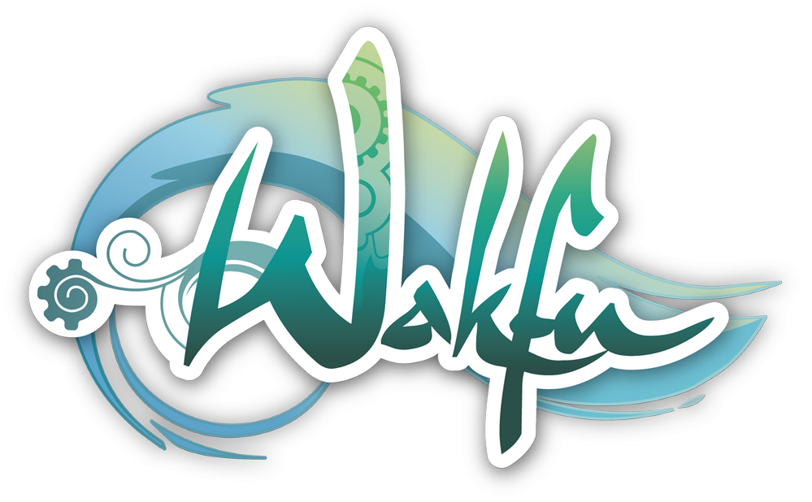

Ankama, des projets variées.
Dofus
 Au début, Dofus était censé être le quatrième opus de la série de jeu Arty Slot, et il était uniquement en joueur contre joueur (PvP). De fil en aiguille, le jeu a été amélioré et finit par être renommé en “Dofus” quelques mois avant sa sortie, pendant sa période de bêta test.
Au début, Dofus était censé être le quatrième opus de la série de jeu Arty Slot, et il était uniquement en joueur contre joueur (PvP). De fil en aiguille, le jeu a été amélioré et finit par être renommé en “Dofus” quelques mois avant sa sortie, pendant sa période de bêta test.
Il devient le précurseur du Krosmoz; un univers omniprésent dans les projets d’Ankama car il est transmédia: Jeux vidéos, jeux mobiles, de société, dessins animés, etc. il deviendra la marque de fabrique d’Ankama au fil des années. Entre les années 2005 et 2010, Dofus connaît le pic de sa popularité, surpassant le nombre de joueurs français de World Of Warcraft, alors que ce dernier était, pendant une longue période, le MMORPG le plus joué du monde.
Wakfu (anime)
Wakfu est une série d'animation française qui a été diffusée pour la première fois en 2008, elle a connu plusieurs saisons et adaptations au fil des années. Elle se déroule dans un monde fantastique rempli de magie et d'aventure, environ 10 ans après le commencement de l'avènement de la prophétie du Héros dans le MMORPG Wakfu.
L'histoire suit un groupe de jeunes héros, dont Yugo, un enfant aux pouvoirs mystérieux, qui partent à la recherche de sa famille perdue tout en luttant contre des forces maléfiques. Ils voyagent à travers des contrées variées, découvrent de nouveaux amis et affrontent des ennemis redoutables.
Wakfu (MMORPG)
 Wakfu est un MMORPG en tour par tout, annoncé en 2006 puis sorti le 29 février 2012 et programmé en Java. Il est le quatrième MMO d’Ankama, mais n’a pas pour vocation de remplacer ces derniers: il est développé et mis à jour en parallèle par une équipe spécifique.
Wakfu est un MMORPG en tour par tout, annoncé en 2006 puis sorti le 29 février 2012 et programmé en Java. Il est le quatrième MMO d’Ankama, mais n’a pas pour vocation de remplacer ces derniers: il est développé et mis à jour en parallèle par une équipe spécifique.
Il reste similaire à son prédécesseur Dofus, avec des améliorations techniques et de gameplay: Pas de temps de chargements entre les différentes cartes, plus de quêtes annexes scénarisées, cinématiques, meilleurs graphismes et animation, etc. Il n’aura pas le même succès phénoménal que Dofus, mais restera une réussite.
Waven
Waven est un MMORPG sorti en accès anticipé depuis le 13 août 2023, après de nombreuses phases de test en bêta fermées et ouvertes, et qui est prévu de sortir en fin d’années 2023.
Ce MMORPG est différent de ces prédécesseurs: Combats avec un deck constitué par le joueur, centré sur le combat et notamment le PvP, plus de création de personnages uniques: des classes plus spécialisées avec des skins (cosmétiques) differentes, simple à prendre en main mais difficile à maîtriser parfaitement.
One More Gate
One More Gate est un jeu roguelike sorti le 11 Octobre 2022. Basé sur la création de deck de cartes afin de se battre, chaque partie est différente due à des événements aléatoires: des améliorations, ou à l'inverse des malus, des ennemies différents, des combats qui ne se passes pas de la même manière, One More Gate peut être rejouer plusieurs fois sans être répétitif.
Lui aussi basé sur le monde des Douze du Krosmoz, nous y retrouvons les mêmes règles, quelques personnages emblématiques des anciens jeux, des ennemies que les joueurs ont déjà battues avec leurs personnages, et la même magie qu’est le Wakfu.
Cosmobot
Cosmobot est un jeu mobile sorti le 14 août 2018, qui lui ne fait pas partie du Krosmoz. C’est un jeu d’arcade simple et amusant ou le joueur doit contrôler son robot et sauter de planète en planète en évitant des obstacles et des ennemis. Ce n'est pas le seul projet mobile d'Ankama, il y a aussi une version mobile de Dofus nommée Dofus Touch.
Radiant
Radiant est un manga sortie le 13 juillet 2013, qui a été adapté en série animé diffusé sur Crunchyroll, Anime Digital Network, Netflix et la chaîne J-One. Il s’agit de la première bande dessinée française à être adaptée et diffusée au Japon.
Il se déroule dans un monde où les monstres appelés "Némésis" contaminent les habitants avec une malédiction. Seth, un jeune sorcier, est déterminé à devenir un Chasseur de Némésis pour éliminer ces créatures et trouver le légendaire "Radiant", source présumée des Némésis.
Monster Slaughter
Monster Slaughter est un jeu de société sortie le 7 décembre 2018 pour 2 à 5 joueurs à partir de 14 ans, ou vous incarnez une famille de monstres (vampires, momies, zombies, etc) qui traque des étudiants, devant les éliminés pour accumuler le plus de points, avec des strategies differentes.